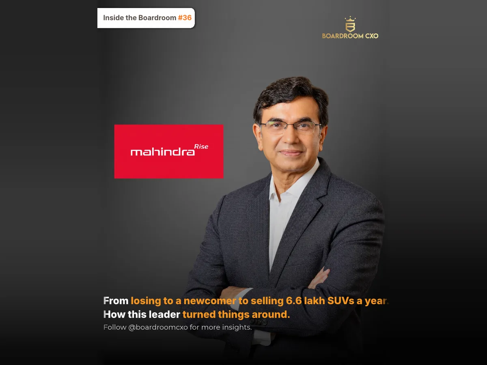

Key Takeaways
- In FY21, Mahindra sold 1,55,530 utility vehicles, down 13 per cent, and fell to fourth place in India, just 156 units behind Kia, as its segment share dropped from nearly 19 per cent to 14.7 per cent.
- Rajesh Jejurikar, who took charge on 1 April 2020, refused 'me-too' products, launched a new SUV-only identity in August 2021, and followed with the XUV700, the Scorpio-N (1 lakh bookings in about 30 minutes) and the Thar Roxx (1,76,218 bookings in 60 minutes).
- In FY26, Mahindra sold a record 6,60,276 SUVs in India, more than four times its FY21 number and about 20 per cent more than FY25, and became India's second-largest passenger vehicle maker.
Mahindra lost its place in India's SUV market to a company that had been selling cars here for less than two years. The gap was 156 vehicles.
In FY21, Kia sold 1,55,686 utility vehicles in India. Mahindra and Mahindra, the maker of the Scorpio, the Bolero and the Thar, sold 1,55,530. Kia took third place. Mahindra fell to fourth.
The man who had to answer for it was Rajesh Jejurikar.
How Mahindra Lost Its SUV Lead
The slide had been long. Business Today reported that Mahindra's share of India's utility vehicle market had fallen from 55.6 per cent in FY12 to about 15 per cent. Its share of the overall passenger vehicle market had dropped below 6 per cent, its lowest in nearly two decades.
FY21 made it plain. Mahindra's utility vehicle sales fell 13 per cent, from 1,79,405 to 1,55,530. Its share of the segment fell from nearly 19 per cent to 14.7 per cent, the biggest drop of any carmaker that year. Kia, which only began selling in India in 2019, grew 83 per cent.
The market had moved. Buyers wanted SUVs, but many of the new ones were car-based crossovers with modern cabins and features. Mahindra's range looked old beside them.
Who Is Rajesh Jejurikar?
Rajesh Jejurikar is Executive Director and CEO of the Auto and Farm Sector at Mahindra and Mahindra. He became Executive Director for the automotive and farm businesses on 1 April 2020, and his current term runs to June 2029.
He is a marketer by training. He studied at SP Jain Institute of Management and Research in Mumbai and at Wharton, and worked at Voltas, FCB Ulka and Marico before joining Mahindra in 2000 as Vice President, Marketing, for the automotive business. He was part of the team that launched the first Scorpio in 2002. Later he ran Mahindra's tractor business.
He took charge of autos at the height of the Covid lockdown. Autocar India reported that the business began his tenure with almost 45 days of zero revenue.
What Does Mahindra Stand For? The SUV Reset
The usual answer to lost share is to chase it. Launch cheaper models, match every rival in every body style, and push discounts until the numbers recover.
Jejurikar went the other way. He went back to the question his team had asked two decades earlier, when it built the Scorpio. He later recalled it for Autocar:
"We were at the crossroads again. We had to dial back 20 years to ask the team 'What does Mahindra stand for and what is our right to win?'"
The answer was narrower, not wider. In April 2021, he told Business Today that Mahindra would not try to win in everything now called an SUV. "We will not make a series, which are 'me-too' or 'X fighter' or 'Y fighter' or whatever," he said. "We should not be making strategic choices based on a desire for market share."
Three changes followed.
- A new identity. In August 2021, Mahindra unveiled a new Twin Peaks logo used only on its SUVs. "The XUV 700 marks the beginning of a whole new Mahindra," Jejurikar said.
- Products built on the core. The XUV700 came first in 2021. The Scorpio-N followed in July 2022 and drew 1 lakh bookings in about 30 minutes.
- A faster organisation. Autocar Professional, naming him its Man of the Year for 2022, noted that he had restructured the business to be quicker and more agile.
Then, in October 2024, came the five-door Thar Roxx. It took 1,76,218 bookings in its first 60 minutes.
What the Mahindra SUV Strategy Delivered
The numbers moved fast. Within months of the Scorpio-N launch, Autocar reported that Mahindra had become India's number one SUV maker by revenue.
In FY26, Mahindra sold 6,60,276 SUVs in India. It was the company's highest ever, up about 20 per cent on FY25's 5,51,487. That is more than four times what it sold in FY21. In that single year, its SUV sales grew by more than a lakh.
It also changed the rankings well beyond the SUV segment. In FY26, Mahindra overtook Hyundai to become India's second-largest passenger vehicle maker in the domestic market.
Five years earlier, it had trailed a newcomer by 156 vehicles.
The Boardroom Lesson: Identity Before Market Share
When a company loses its rank, the board's first instinct is to ask how to win back the share. Jejurikar asked a different question first: what is this company actually good at, and where can it win?
Losing your place is not the end. Forgetting who you are is.
By saying no to "me-too" products, Mahindra gave up some segments. In return, every launch reinforced one clear promise, and buyers queued for it.
Common Mistakes Boards Make When They Lose Market Share
Boards watching a rival take their place tend to repeat the same three errors.
They chase every segment the rival is in. Copying a newcomer's range spreads money and engineering thin. Mahindra chose to compete where its brand gave it a right to win.
They treat share as the goal, not the result. Jejurikar said openly that strategy should not be driven by a desire for market share. The share came back because the products connected.
They hire for cost-cutting when the problem is identity. A company that has lost its place often needs a leader who can say what the brand stands for, not only one who can trim the budget.
A Framework for Hiring a Leader to Win Back Market Leadership
When we brief boards on a leadership search after a loss of rank, we push for three specific checks.
- Ask the candidate what the company should stop doing. A leader who can name the segments to leave is more useful than one who promises to win in all of them.
- Look for people who know the brand's roots. Jejurikar had helped launch the first Scorpio. Leaders who understand why a brand won the first time are well placed to rebuild it.
- Back the reset for long enough to see it. Mahindra's identity change began in 2021 and its record came in FY26. Boards should agree how long they will hold their nerve before judging.
Why This Belongs in the Boardroom, Not Just the Business Pages
This is the other half of the Mahindra story we told in Anish Shah: The Outsider Who Fixed Mahindra's ₹5,200 Crore Problem. Shah fixed the group's loss-making businesses and set the capital rules. Jejurikar rebuilt the core product business around one clear idea. It also sits beside Shailesh Chandra at Tata Motors, another carmaker that came back from the bottom of the table.
Share can be bought for a quarter. Identity has to be earned for years.
Sources
- Autocar Professional, Kia, Hyundai and Tata grab UV market share, Maruti and Mahindra feel the heat in FY2021, April 2021
- Business Today, A Rough Ride, April 2021
- Mahindra and Mahindra, Mahindra unveils its All-New Visual Identity Crafted Exclusively for the SUV Portfolio, August 2021
- Autocar India, Rajesh Jejurikar is Autocar Professional's Man of the Year 2022, December 2022
- Mahindra and Mahindra, Mahindra Thar ROXX opens with 176218 bookings within 60 minutes, October 2024
- Autocar Professional, Mahindra & Mahindra reports 25% domestic SUV growth to 60,272 units in March 2026, achieves record FY26 annual volume of 6,60,276, April 2026
- Autocar Professional, Mahindra Emerges as the New No.2 in FY26, April 2026
Related Reading
Anish Shah: The Outsider Who Fixed Mahindra's ₹5,200 Crore Problem
Read → R · 02 Founder Leadership · October 2026Shailesh Chandra Took Over Tata's Cars at Their Low Point. Sales Are Now Nearly 5x.
Read → R · 03 Founder Leadership · October 2026R C Bhargava: Maruti's Share Hit a 13-Year Low. It Still Sold a Record 24 Lakh Cars.
Read →Lost your rank to a newer rival and need a leader who can reset the brand?
We screen for business and marketing leaders who have rebuilt a brand around what it does best, not only those who chased share with discounts. Brief us on the mandate and we will tell you who the market really has.
Brief Us on a Mandate See all Marketing roles we fill →